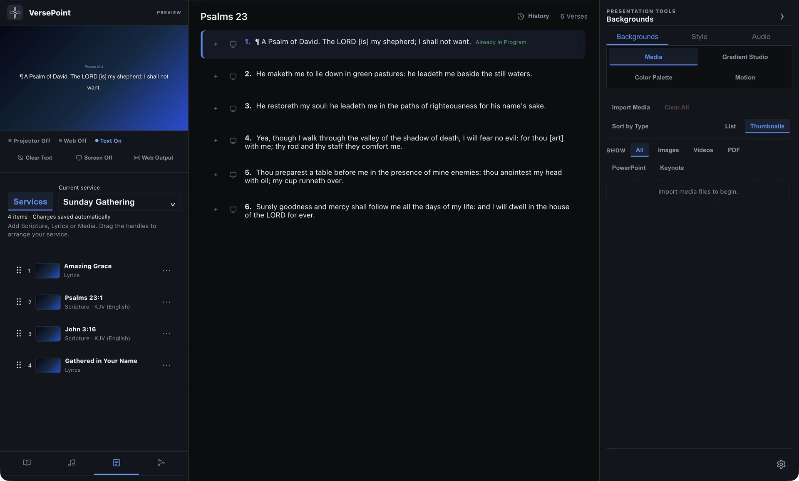
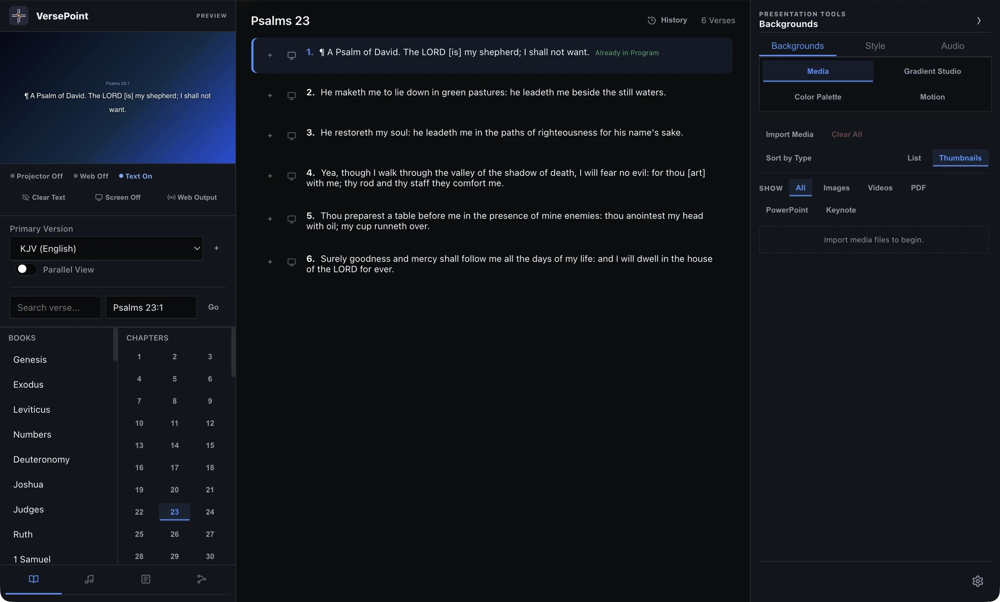
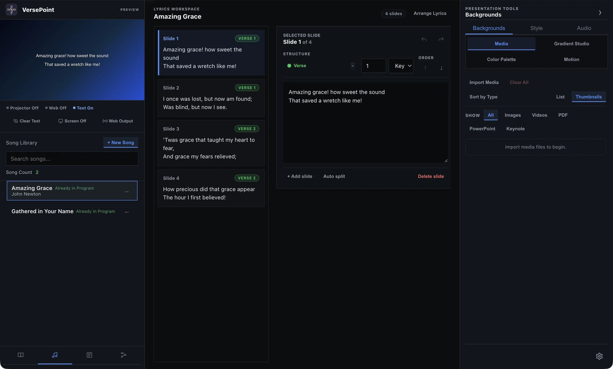
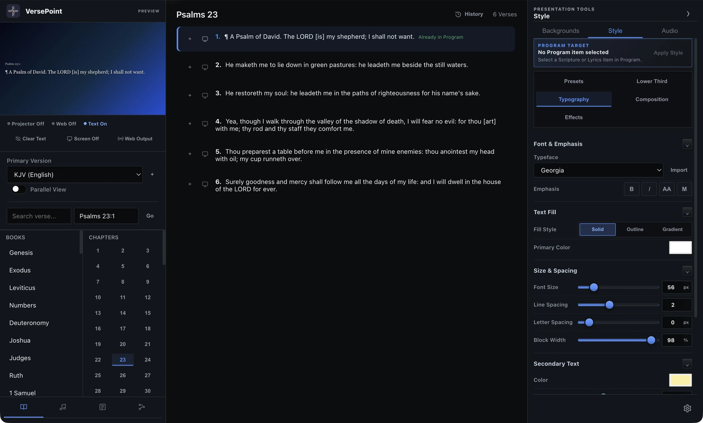

Church presentation software
Bring the service into focus.
Scripture, songs and service plans.
Interactive app captures. Editing and live output require the desktop app.

Open preview

Projector & Web Output
Present to a screen or browser.
OBS & streaming
Add Web Output to your stream.
Mobile requests
You decide what goes live.
VersePoint v1.1.0
What’s New
v1.1.0 Released · 23 October 2026
More ways to plan the service, present your content and stay in control.
VersePoint v1.1.0 is now available for Windows and macOS.
Service planning
Organize Scripture, songs, media and timed cues with Programs and Service Flow.
Document presentations
Present supported PowerPoint, PDF and Keynote files as static slides, with readable thumbnails and navigation for large presentations.
Mobile control
Receive Scripture and song requests, then give selected phones permission to control assigned presentations.
Motion Studio
Create reusable motion designs, export video backgrounds in Standard or Large sizes and organize them in your Motion library.
Overlay Graphics
Add styled lower thirds, announcements, QR codes and countdowns across Preview, Projector and Web Output.
Saving and recovery
Save pending changes before closing, retry after loading or saving errors, and transfer selected settings between computers.
Get VersePoint.
Free for churches.